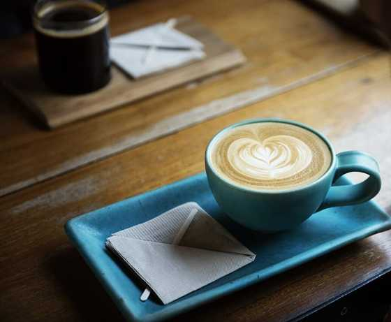
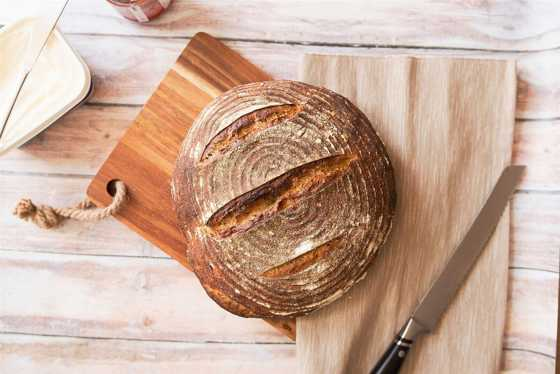
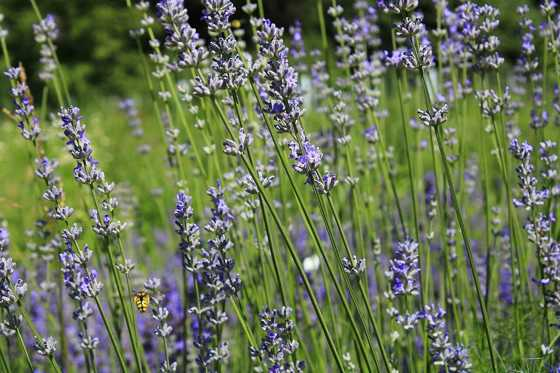
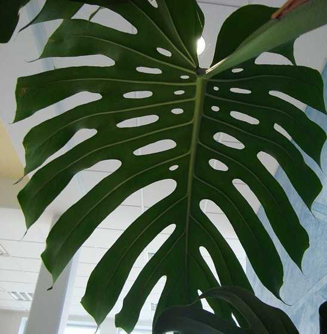
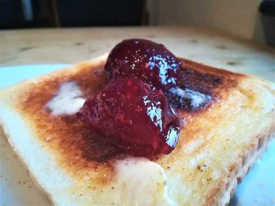

米子市蚊屋 ・ おうちカフェ
しろくろや
白いパンダと黒いパンダ。ふたつのぬいぐるみから名づけた、ほっこりやさしい姉妹の小さなカフェ。

お店の由来・想い
店名の「しろくろや」は、オーナーが持っていた白いパンダのぬいぐるみ「しろ」と、パンダ好きの妹さんが持っていた黒いパンダのぬいぐるみ「くろ」を合わせて名づけられたと、取材記事で紹介されています。
国道9号沿いの住宅街にある、おうちのようなカフェ。自家製のパンや手づくりの焼き菓子を、ゆったりとした空間で楽しめるお店として紹介されています。
※ 配色(白と黒、竹の緑)は店名から連想した制作側のイメージです。




口コミ(イメージ例)
イメージ例
住宅街の中にあって、まるでお友だちの家に来たような落ち着く空間でした。パンのランチもおいしかったです。
創作のイメージ例です
イメージ例
ハンドドリップのコーヒーと焼き菓子でひと休み。ゆっくり時間が流れる、また来たくなるお店です。
創作のイメージ例です
イメージ例
テイクアウトのお菓子を買って帰りました。やさしい味で、家でもほっこりできました。
創作のイメージ例です
口コミは実在の声ではなく、制作側が作成したイメージ例です。
アクセス
- 店名
- しろくろや
- 住所
- 〒689-3543 鳥取県米子市蚊屋200-34
- 電話
- 準備中
- 営業時間
- 準備中
- 定休日
- 準備中
最新の営業日・メニューはInstagramでご確認ください。
写真クレジット
- img01.jpg ラテアートのカップ: rawpixel.com / CC0 1.0
- img02.jpg グラスのカフェラテ: Petr Kratochvil / CC0 1.0
- img03.jpg ジャムをのせたトースト: MOs810 / CC BY-SA 4.0
- img04.jpg チョコレートケーキ: Daria Yakovleva / CC0
- img05.jpg 木のボードの丸パン: Ben Garratt / CC0
- img06.jpg コーヒーとクロワッサン: www.Pixel.la Free Stock Photos / CC0
- img07.jpg ラテアートのカップ: Abdulrohmatt / CC BY-SA 4.0
- img08.jpg 焼きたてのクロワッサン: Herry Wibisono (herryway) / CC0
- img09.jpg ラベンダーの花: Humoyun Mehridinov / CC BY-SA 4.0
- img10.jpg コーヒーカップ: Zacharias Korsalka / パブリックドメイン
- img13.jpg エスプレッソ: Jubair1985 / CC0
- img14.jpg モンステラの葉: Smatu / CC BY-SA 4.0